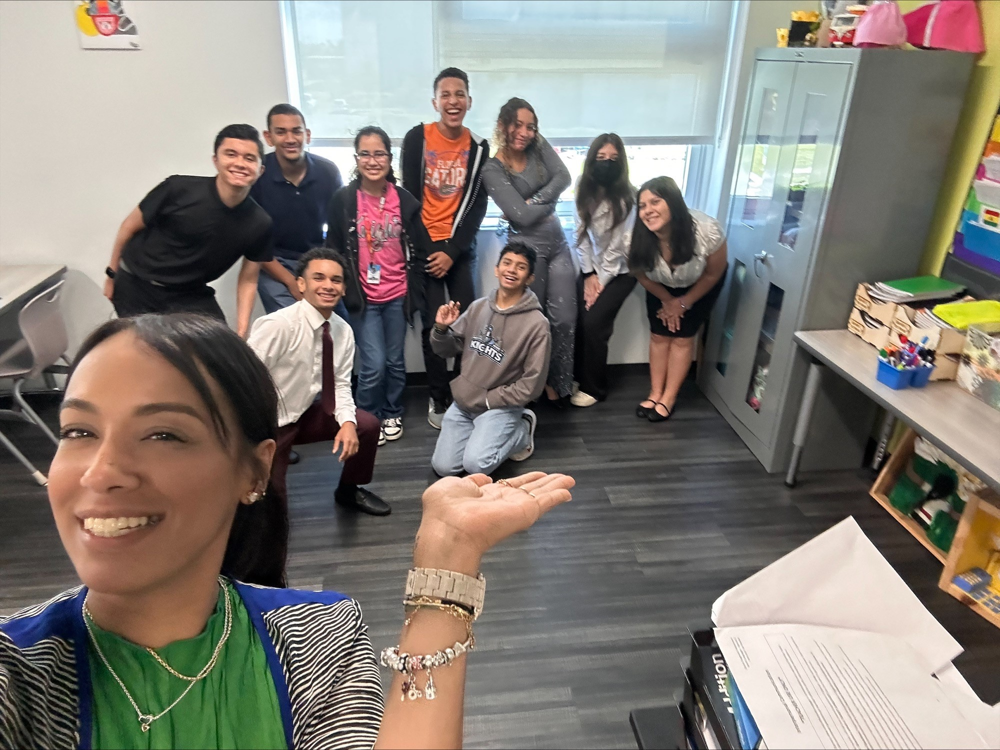

What is AP WE Service?
AP We service is a program designed by College Board and WE. This program makes learning based on internationally-recognized services with AP class resources. It helps both teachers and students identify opportunities at both the local and global levels that can be used for learning through practical problem-solving. Students get to define what form their service will take, they apply the content and skills they've learned during their AP class to real-world situations that require innovation, creativity, and organization to solve.
Our Mission
TúCanSpeak's mission is helping to overcome the language barrier that Spanish-speaking people face. Over 26 million people in the United States have difficulties with the English language. This can cause misunderstandings, frustration, and violence. Our mission is to reduce this number by aiding in the learning of both languages.
Public: People who are trying to learn another language.
Goal: Make learning English or Spanish easier.
Method: Using Chat GPT API Chatbot technology to translate words, sentences, and teach the basics of the languages by practicing conversations.
Public: People who are trying to learn another language.
Goal: Make learning English or Spanish easier.
Method: Using Chat GPT API Chatbot technology to translate words, sentences, and teach the basics of the languages by practicing conversations.
Meet the Team

Dylan Lopez Millian, Julian Dominguez, Samantha Valenzuela, Jayden Graham, Angielina Ramos, Gianna Loor, Camila Melean, Gustavo Serate-Martinez, Angel Amundarains